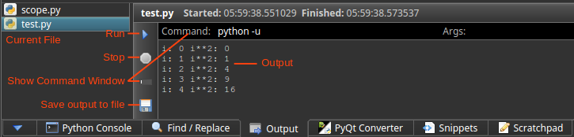

Output
The run button uses the output plugin to run code and display output from the code. Multiple files can be running at once and they run in a separate process from the IDE.
Screen Overview

Set up your language to run
- Click the settings button
 to edit your settings.
to edit your settings.
- In the Languages section, add/edit the run attribute for the language.
"python": {
"run":"python -u"
}
Notes
- The run argument contains the command or path to the executable to run your code
- Include additional arguments at the end. For Python, -u makes the output update as the code runs instead displaying only when it finishes.
- Before executing the code, the current directory is changed to the file being run.
- Make sure the appropriate software is installed and settings are set up as described above. For example, to run javascript in nodejs, nodejs must be installed.
- The command is built as:
<run> <filename>
python -u test.py
How to Run Code
- Click the run button (or F5) in the top toolbar to execute the code.
Examples of different language settings
"javascript": {
"run":"/home/username/nodejs/bin/node -i"
}
"coffee": {
"run":"coffee -p --print"
}
"python": {
"run":"C:\\python27\\python -u"
}
Appropriate software needs to be installed before this will work.